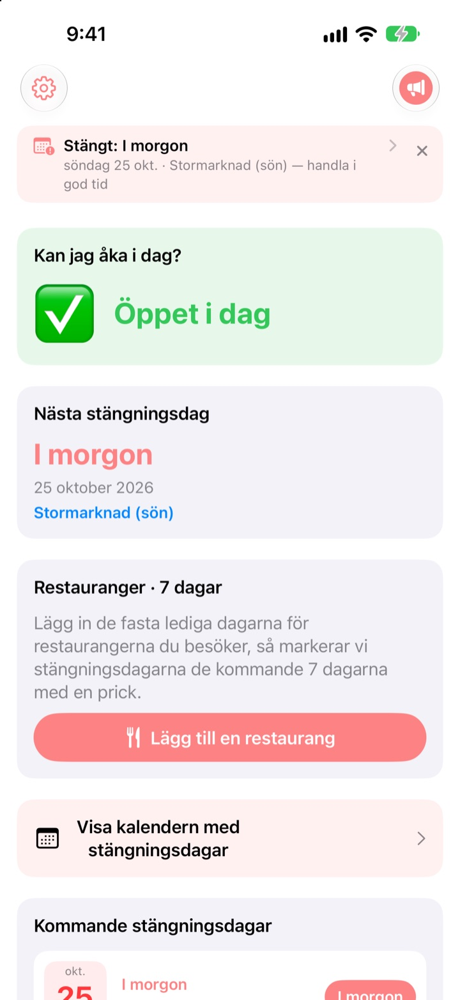
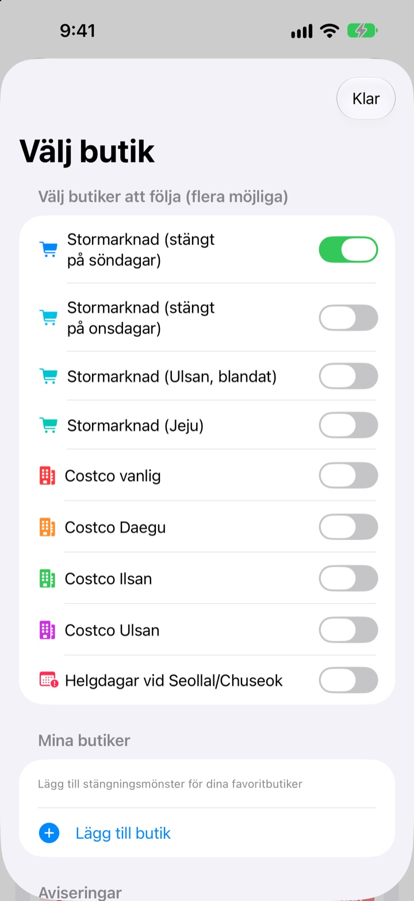
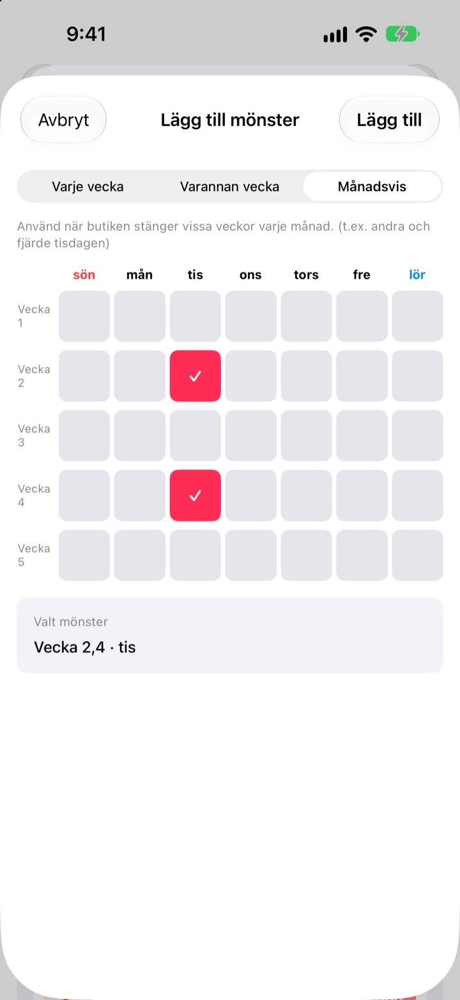
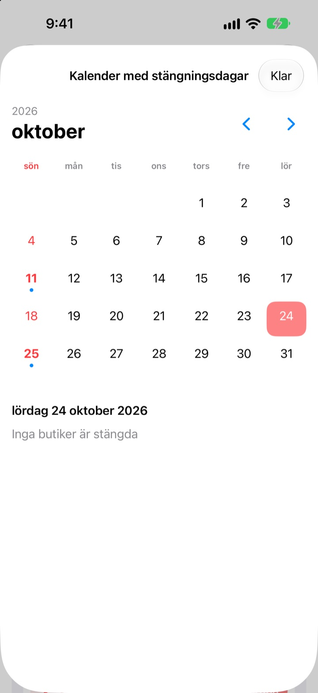
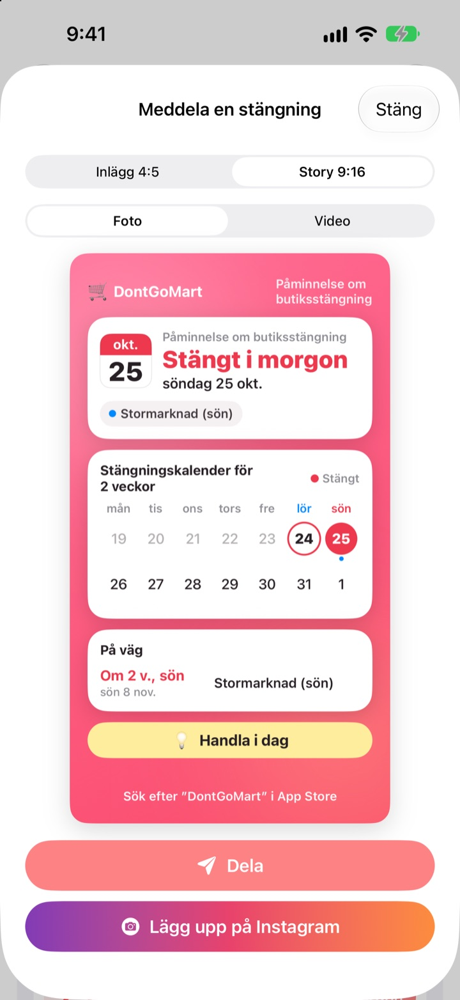

Innan du åker och handlar,
kolla att det är öppet
När du öppnar appen ser du först om dina butiker har öppet i dag. Före varje stängningsdag får du en påminnelse, så att du aldrig står vid en låst dörr igen.
Alla funktioner är gratis. Inget konto, ingen reklam.

Testa med din butik
Välj en butik och se direkt om den har öppet i dag och när den stänger nästa gång. Beräknat med samma regler som i appen.
Har du stått med inköpslistan framför en stängd butik?
Stora stormarknader i Korea måste hålla stängt två dagar i månaden, men vilka beror på var du bor. Oftast andra och fjärde söndagen, på andra ställen onsdag, och Ulsan och Jeju har egna regler. Hos Costco beror det på varuhuset. DontGoMart räknar ut stängningsdagarna enligt dina butikers regler och säger först om du kan åka i dag.
Rätt i varje region
Välj butiker som stänger på söndagar eller onsdagar, eller regioner med eget schema som Ulsan och Jeju. Vanliga Costco-varuhus och de i Daegu, Ilsan och Ulsan ställs in var för sig.
Stängning på själva Seollal och Chuseok visas också, och du kan följa flera butiker samtidigt.

Närbutiken och stamrestaurangerna
Saknas en butik i listan lägger du till den själv: varje vecka, varannan vecka eller vilka veckor i månaden och vilken dag den stänger.
För en restaurang klistrar du in en länk delad från Naver Map eller väljer en skärmbild av infosidan, så fylls de fasta lediga dagarna i automatiskt. Text på bilder läses bara på din enhet.

Påminnelser och widgetar så att du inte glömmer
Få en påminnelse 1, 2, 3 eller 7 dagar innan vid den tid du väljer, och dagen före en till om att i dag är en bra dag att handla.
Widgetar på hemskärmen och låsskärmen visar nästa stängningsdag, om det är öppet den här söndagen och de kommande sju dagarna för dina restauranger. Kalendern visar en hel månad.

Dela på ett kort
Gör om nyheten till ett kort med en kalender för två veckor och ett handlingstips och skicka det till familjechatten. Format för Instagram-inlägg och -story, och kort video.

Kom igång i tre steg
- 1
Välj butiker
Slå på butikerna och regionerna där du handlar. Så många du vill.
- 2
Slå på påminnelser
Välj hur många dagar innan och vilken tid.
- 3
Lägg till en widget
Kolla från hemskärmen eller låsskärmen utan att öppna appen.
Stängningsregler per butik
- Stormarknad (stängt på söndagar)
- 2:a och 4:e söndagen · de flesta regioner
- Stormarknad (stängt på onsdagar)
- 2:a och 4:e onsdagen · delar av Gyeonggi, Cheongju
- Stormarknad (Ulsan)
- 2:a onsdagen, 4:e söndagen
- Stormarknad (Jeju)
- 2:a fredagen, 4:e lördagen
- Costco vanlig
- 2:a och 4:e söndagen
- Costco Daegu
- 2:a och 4:e måndagen · Daegu, Daegu Innovation
- Costco Ilsan
- 2:a och 4:e onsdagen
- Costco Ulsan
- 2:a onsdagen, 4:e söndagen
- Seollal, Chuseok
- stängt på själva dagen
Lagstadgade stängningsdagar bestäms av lokala myndigheter och kan ändras. Stämmer något inte, mejla adressen nedan.
Vanliga frågor
Stängningsdagarna stämmer inte.
Lagstadgade stängningsdagar styrs av lokala föreskrifter och skiljer sig mellan regioner. Kontrollera i Inställningar att du har valt rätt butikstyp (stängt på söndagar, onsdagar, Ulsan, Jeju osv.). Stämmer det fortfarande inte, skicka oss butikens namn och område så tittar vi på det.
Min butik finns inte i listan.
Lägg till den som egen butik. Välj varje vecka, varannan vecka eller vilka veckor i månaden och vilken dag den stänger, till exempel andra och fjärde söndagen.
En restaurangs lediga dagar fylldes i fel.
Vid import från en Naver Map-länk måste restaurangens sida ange de fasta lediga dagarna. Vid skärmbild ska texten om stängning synas. Du kan rätta allt innan du sparar.
Jag får inga påminnelser.
Kontrollera att notiser är tillåtna under Inställningar > Notiser > DontGoMart och att påminnelserna är påslagna i appen.
Widgeten uppdateras inte.
Öppna appen en gång så uppdateras widgetarna. Hjälper inte det, ta bort widgeten och lägg till den igen.
Vad är dricks?
Alla funktioner i DontGoMart är gratis. Kaffe, tårta och måltid är dricks till utvecklaren. Efteråt får du ett tack och ett märke som visar hur många gånger du har gett.
Vart vänder jag mig om betalning eller återbetalning?
Apple hanterar köp i appen, så återbetalning begär du på reportaproblem.apple.com. För allt annat, mejla oss.
Hur hanteras mina uppgifter?
Inga konton, ingen reklam och inga spårningsverktyg, och text på skärmbilder läses bara på din enhet. Läs mer i integritetspolicyn nedan.
Frågor eller idéer? Mejla hyunho.lee.1993@gmail.com. Vi svarar oftast inom en dag eller två.